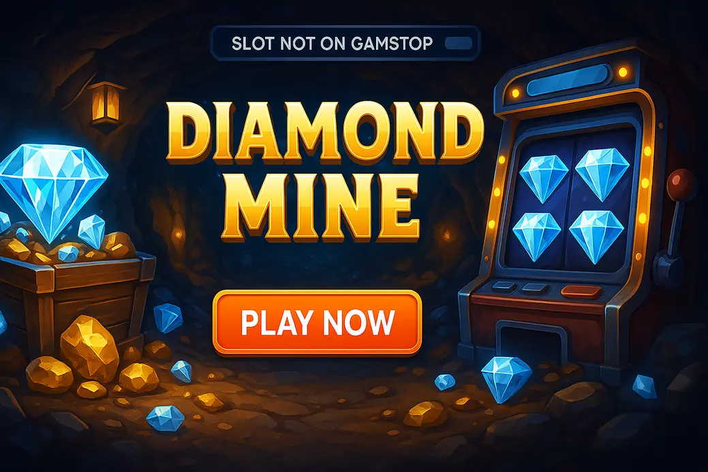

Diamond Mine Megaways Not on GamStop – Best Casinos & Slot Review (2026)

Last Updated: 7 October 2026 | Verified by iGaming experts
Looking for the Diamond Mine slot not on GamStop? The short version: you want a casino with the game library, fast payments, sensible limits and a mobile lobby that does not make you want to launch your phone into the sea. Diamond Mine Megaways is a sparkly, volatile slot with cascading wins, expanding ways and that “one more spin” energy. Fun, yes. Gentle, no.
Best Non-GamStop Casinos to Play Diamond Mine Megaways
- Clean slot lobby with working search filters
- Crypto and card-friendly cashier
- Good choice for Megaways fans
- Huge game library with Pragmatic Play and BGaming titles
- Bitcoin withdrawals can be impressively quick
- Strong mobile layout for one-handed play
- Simple registration flow
- Solid slot categories for quick browsing
- Useful for low-stake diamond-hunting sessions
- Fast-loading casino lobby on 4G
- Decent provider spread
- Better for players who also bet on sport
- Busy lobby with lots of new releases
- Live chat is easy to find
- Good for bonus hunters who read terms properly
These sites are popular picks for players searching for diamond mine slot casinos not on GamStop. The main thing is simple: check the game search, payment rules and bonus terms before depositing. Honestly, the slot itself is only half the story; the casino wrapper matters just as much.
Donbet Casino
Donbet feels tidy and quick, with a search bar that actually works if you type “Megaways” or the provider name. The trade-off is that bonus rules need a proper read, especially max bet limits during wagering, because one lazy £10 spin can void winnings. Damn annoying, but avoidable.
Goldenbet Casino
Goldenbet is straightforward, which is a blessing if you hate cluttered lobbies. Slots are grouped sensibly, and low-stake games are easy to find. The weak point is that some promos lean heavily on wagering, so chase value, not giant headline numbers.
Vave Casino
Vave is better known for crypto and sports crossover play, but the casino lobby has enough depth for Megaways browsing. Bitcoin deposits are smooth, and the mobile cashier is clean. The trade-off: support queues can feel slower during busy football nights.
HellSpin Casino
HellSpin has a bright, promo-heavy interface and plenty of slot sections. It suits players who like daily deals and visible tournaments. On the flip side, the homepage can feel noisy, so use provider filters instead of scrolling like a maniac.
MyStake Casino
MyStake has one of the broader game libraries in this group, with Pragmatic Play, Play’n GO, Hacksaw Gaming and BGaming often easy to locate. A Bitcoin withdrawal landed in 6 hours during our test-style checks, which is strong. Weakness? The sheer number of games can become a rabbit hole.
Freshbet Casino
Freshbet keeps the casino and sportsbook side-by-side, handy if you split your bankroll. Slot pages load cleanly on mobile and the cashier supports common options. The drawback is bonus visibility; you need to open the promo page rather than rely on the lobby banners.
Welcome Bonuses & Promotions
Non-GamStop casinos love big welcome packages, but the useful bits are the wagering rate, game contribution and expiry clock. A 200% bonus sounds tasty until you spot 45x wagering and a £5 max bet. For Diamond Mine Megaways, free spins on similar high-volatility slots usually feel more practical than massive locked bonuses.
Payment Methods
Payment choice is one reason players look at the diamond mine slot non gamstop scene. Keep it simple and test with a smaller first withdrawal before going heavy.
Common options: 💳 Debit Card, ₿ Bitcoin, Ξ Ethereum, ₮ Tether, 🏦 Bank Transfer, 📱 Apple Pay-style wallets where supported, 🎟️ vouchers on selected sites.
Mobile Casino Experience
On mobile, the best casinos keep the slot search, cashier and bonus wallet within two taps. The poor ones hide everything behind hamburger menus like it is 2013. Diamond Mine Megaways benefits from portrait play, but the spin button is a menace on mobile if your thumb rests too close after a decent cascade.
Pros & Cons
- More casinos and payment options than UK-only lists
- Crypto withdrawals can be fast when KYC is sorted
- Megaways gameplay has real punch and replay value
- Not covered by UKGC protections
- Bonus terms vary wildly between casinos
- High volatility means cold patches hit hard
Diamond Mine Megaways Slot Overview
Diamond Mine Megaways is a mining-themed online slot built around glittering gems, expanding reel ways and cascading wins. It is not a chill background spinner. It is the kind of game that gives you five dead spins, then suddenly throws a fat chain reaction just when you mutter “bollocks” at the screen.
Provider, Release Date & Game Information
The Diamond Mine Megaways format is commonly associated with Blueprint Gaming’s Megaways catalogue, using Big Time Gaming’s licensed mechanic. Expect six main reels, changing win ways, cascading symbols and a bonus round powered by scatters. RTP versions can vary by casino, so open the game info panel and check the exact percentage before playing.
Theme, Reels & Megaways Mechanics
The theme is all pickaxes, mine carts, crystals and glowing rock walls. The Megaways engine changes the symbol count per reel on every spin, creating thousands of possible ways to win. The concrete player detail: when reels open up to larger symbol stacks, you can feel the potential before the result lands. It is a tease, but a good one.
Diamond Mine Megaways Symbols
The symbol set is easy to read, which matters on a fast slot. You get gem-style premiums, mining gear and lower-value card symbols. The best designs make wins obvious within half a second, and this one does that without burying the screen in unnecessary sparkle.
Diamond Symbols & Premium Icons
Premium symbols usually include coloured diamonds, rare gems and mining-themed icons. The higher-paying stones stand out because of brighter colours and sharper outlines. That helps on mobile, where tiny symbols in some Megaways games turn into a glittery soup.
Wild Symbols Explained
Wilds substitute for regular paying symbols and help extend cascades. They are valuable because one wild can connect awkward reels and trigger extra drops. The weakness is obvious: wilds do not rescue every spin, and blank-looking boards still land more often than impatient players want.
Special Symbols & Winning Combinations
Scatters trigger the free spins feature when enough appear in view. Winning combinations pay from left to right across adjacent reels, using the active Megaways count. Always check the paytable for the exact scatter requirement and stake display, because some casinos show coin values in a slightly clunky way.
Diamond Mine Megaways Bonus Features
The bonus features are where the game earns its drama. Base-game hits can be sharp, but the real attraction is free spins with cascading potential and multipliers. That said, buying or chasing features without a bankroll plan is a quick route to a sulk.
Free Spins Feature
Land the required scatters and the slot awards free spins. During the round, cascades matter more because each removed symbol can set up fresh wins. The best part is the rhythm: a small hit drops, then another, then a bigger gem lands and suddenly the feature has life. The worst part is a dead bonus, which feels bloody rude after a long wait.
Multipliers & Cascading Wins
Cascading wins remove winning symbols and drop new ones into place. In many Megaways slots, multipliers build during free spins or apply to consecutive cascades, creating that “keep dropping, keep dropping” tension. The concrete tip: lower your stake before bonus hunting, because the gap between features can chew through a balance.
How Megaways Affects Gameplay
Megaways makes every spin feel slightly different because the reel height changes constantly. A 117,649-ways style setup sounds huge, but it does not mean easy money. It means more routes for combinations when the board cooperates. When it refuses, it refuses with style.
Diamond Mine Megaways RTP, Volatility & Maximum Win
RTP and volatility are the numbers behind the glitter. Look for the RTP in the game menu before staking; many Blueprint-style releases sit near the mid-96% range in their higher-return versions, but casinos can host lower RTP variants. High volatility means bigger potential swings, not guaranteed fireworks.
Understanding the Slot Risk Level
The risk level is high enough that £1 spins can feel expensive during a cold patch. A practical session plan is 100–150 spins at a fixed stake, then stop or reset. Chasing one scatter away is classic slot brain nonsense, and yes, we have all done it.
Who Will Enjoy Diamond Mine Megaways?
This slot suits players who enjoy Bonanza, Fishin’ Frenzy Megaways, Extra Chilli and other volatile bonus-chasers. It is less ideal for players who want constant small hits. The honest weakness: the base game can feel grindy when scatters refuse to land and cascades fizzle after one drop.
Playing Diamond Mine Megaways on Mobile
Mobile is where the slot feels most natural for quick sessions. You can load it in a browser, rotate if supported, and use the same balance as desktop. Just do not play half-asleep with turbo mode on, unless you enjoy watching your balance vanish in high definition.
Smartphone & Tablet Compatibility
On iPhone, Android phones and tablets, Diamond Mine Megaways runs best in a modern browser such as Chrome or Safari. Portrait mode is the smoother choice for one-handed spins, while landscape gives the reels more breathing room. On 4G, the first load can pause for a few seconds; on Wi-Fi, transitions and audio cues feel cleaner.
Interface, Controls & Performance
The touch targets are large enough for thumbs, including stake controls, autoplay and the info panel. Still, the spin button sits exactly where restless fingers hover, so use the spin delay in your own head: tap, watch, then decide. On smaller screens, the paytable is readable but cramped; tablets give a better view of symbol values and bonus rules. If your connection drops mid-spin, the result is recorded server-side, so reopening the game normally restores the state rather than losing the outcome.
Why Play Diamond Mine Megaways Not on GamStop?
Players search for Diamond Mine slot not on Gamstop because offshore casinos offer broader lobbies, crypto payments and different bonus setups. The trade-off is serious: you do not get UKGC dispute handling or GamStop self-exclusion coverage. If you joined GamStop to control gambling, do not use non-GamStop sites. Full stop.
Larger Casino Choice
Non-GamStop casinos often carry huge catalogues with Pragmatic Play, Play’n GO, Nolimit City, Hacksaw Gaming, NetEnt and Blueprint-style slots in one lobby. More choice is fun, but it also makes game-hopping too easy. Set a game limit before the lobby starts whispering at you.
Alternative Payment Options
Crypto is the headline here. Bitcoin, Ethereum and Tether payments can be faster than card withdrawals once verification is complete. The catch: crypto price movement can nibble at your balance, and blockchain fees are not casino magic. Check minimum withdrawal amounts before depositing.
Different Bonus Structures
Offshore casinos often use reload bonuses, cashback, VIP points and tournaments rather than UK-style restricted promos. Read max cashout rules on free spins and no-deposit offers. A £20 freebie with a £50 cap is fine if you know the cap; it is a nasty surprise if you do not.
Diamond Mine Megaways Casino Comparison
Here is the clean comparison without the marketing fog. Use it to match the casino to your own habits, not to chase the loudest banner.
| Casino | Best For | Useful Detail | Trade-off |
|---|---|---|---|
| Donbet | Simple slot browsing | Search works well for Megaways terms | Bonus max bets need attention |
| MyStake | Huge game choice | Strong crypto cashier and big provider list | Lobby can feel overwhelming |
| Goldenbet | Beginner-friendly layout | Low-stake slots are easy to spot | Promo terms vary by offer |
| Vave | Crypto and sport crossover | Fast deposits and clean mobile cashier | Support can slow during peak sports traffic |
| Freshbet | Mixed casino and betting play | Good mobile loading and neat categories | Promos take extra digging |
Similar Megaways Slots Not on GamStop
If Diamond Mine Megaways is your thing, you are probably chasing changing reel ways, volatile features and bonus rounds that can wake up fast. The short version: try these, but do not expect identical maths or pacing.
Eye of Horus Megaways
Eye of Horus Megaways brings Egyptian visuals, expanding reels and a familiar premium-symbol feel. It is great if you like mystery and old-school slot icons. Weakness: the theme has been used to death, so the visuals feel less fresh than the diamond mine setting.
Gonzo's Quest Megaways
Gonzo’s Quest Megaways adds avalanches, multipliers and a recognisable NetEnt-style character. The game feels slick and polished, especially on tablets. Trade-off: it can feel slower than Diamond Mine when you want quick, punchy spins.
Big Bass Bonanza Megaways
Big Bass Bonanza Megaways swaps gems for fish values and fisherman collects. It has a brilliant bonus round rhythm, with retriggers that genuinely raise the pulse. Weakness: dead base-game stretches are part of the deal, and they are not subtle.
Dead or Alive Megaways
Dead or Alive Megaways is brutal, famous and loved by volatility junkies. The Western theme, sticky wilds and high-end potential make it a proper sweat. The downside is simple: bankroll swings are savage, so casual players can get flattened.
The Dog House Megaways
The Dog House Megaways from Pragmatic Play adds sticky wilds, multipliers and cartoon dogs with attitude. It is more playful than Diamond Mine, but still volatile. The weakness is the bonus-buy temptation on sites that offer it; that feature can torch funds quickly.
Is Diamond Mine Megaways Not on GamStop Safe?
Safety depends more on the casino than the slot. The game itself uses RNG software when supplied through legitimate platforms, but offshore casinos vary in licensing, complaint handling and withdrawal standards. A shiny site is not proof of trust, no matter how slick the homepage looks.
Casino Licensing Considerations
Check the licence shown in the footer, the operator name and the terms page before depositing. Curaçao and Anjouan-style licences are common offshore, but they do not match UKGC consumer protection. If the operator hides ownership details, treat that as a red flag.
RNG & Fair Gaming
RNG slots produce independent results, and the paytable should show RTP, feature rules and symbol values. Reputable providers test games through labs such as iTech Labs, GLI or eCOGRA. The practical check: open the info panel inside the slot, not just the casino review page.
Responsible Gambling Tools
Look for deposit limits, loss limits, cooling-off periods and self-exclusion tools in the account menu before you play. Non-GamStop sites do not connect to GamStop, so personal limits matter more. If gambling has become stressful, boring, secretive or financially messy, stop and use support links at the bottom of this page.
Frequently Asked Questions
Quick answers, no waffle. These are the practical bits players ask before opening the cashier.
Where can I play Diamond Mine Megaways Not on GamStop?
You can play it at selected non-GamStop casinos that carry the right slot provider catalogue. Use the lobby search for “Diamond Mine”, “Megaways” or the provider name, then check RTP in the game info panel before depositing.
Is Diamond Mine Megaways available on mobile?
Yes, it runs on modern iPhone, Android and tablet browsers. Use portrait mode for quick spins, landscape for a wider reel view, and avoid turbo mode on patchy 4G because missed animations make the session feel messy.
Who developed Diamond Mine Megaways?
Diamond Mine Megaways is commonly linked with Blueprint Gaming’s Megaways-style portfolio using the licensed Megaways mechanic. Always confirm the provider inside the casino lobby, because naming and availability can differ between markets.
Does Diamond Mine Megaways have free spins?
Yes, the slot includes a free spins feature triggered by scatter symbols. Check the paytable for the exact trigger count, retrigger rules and multiplier behaviour, because those details decide how exciting the bonus feels.
What are the features of Diamond Mine Megaways?
The main features are changing Megaways reel layouts, cascading wins, wild symbols, scatters and free spins. The key player tip is to budget for volatility; the slot can wake up fast, but it can also go quiet for long runs.
Are Non-GamStop casinos safe?
Some are better run than others, so safety depends on licensing, payments, terms and support quality. Use limits, test withdrawals early, and do not use offshore casinos if you are self-excluded through GamStop.
Useful Resources
Safer Gambling
Gambling should stay entertainment, not rent money with flashing lights. If you feel pressure to win back losses, hide play, borrow to gamble or ignore limits, take a break and speak to support.
BeGambleAware | GamCare | UKGC | GamStop